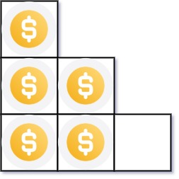
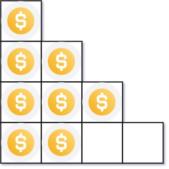

441. 排列硬币
完整 k 行要 k(k+1)/2 枚硬币，解不等式得 k = (√(8n+1)−1)/2 向下取整，O(1)。
思路
- 前
k行完整共需k(k+1)/2枚硬币，题目就是求最大的k使k(k+1)/2 ≤ n。 - 解二次方程
k² + k − 2n = 0取正根：k = (−1 + √(8n+1)) / 2，再向下取整。 n最大到2³¹−1，8n+1用double存得下且精度足够；截断用long防溢出。
图解
最优解
1class Solution {2 public int arrangeCoins(int n) {3 // 完整 k 行恰好要 k(k+1)/2 枚硬币，找满足 k(k+1)/2 ≤ n 的最大 k4 // 解 k² + k − 2n = 0 取正根：k = (√(8n+1) − 1) / 2，向下取整5 long s = (long) Math.sqrt(8.0 * n + 1); // √(8n+1) 截断成整数6 return (int) ((s - 1) / 2);7 }8}题目
你总共有 n 枚硬币，并计划将它们按阶梯状排列。对于一个由 k 行组成的阶梯，其第 i 行必须正好有 i 枚硬币。阶梯的最后一行 可能 是不完整的。
给你一个数字 n ，计算并返回可形成 完整阶梯行 的总行数。
示例 1：

输入：n = 5 输出：2 解释：因为第三行不完整，所以返回 2 。
示例 2：

输入：n = 8 输出：3 解释：因为第四行不完整，所以返回 3 。
提示：
1 <= n <= 231 - 1
题面取自力扣当前版本。
数据快照 2026-11-04。题面版权归力扣所有，本站点仅供本人学习使用，请勿对外发布。